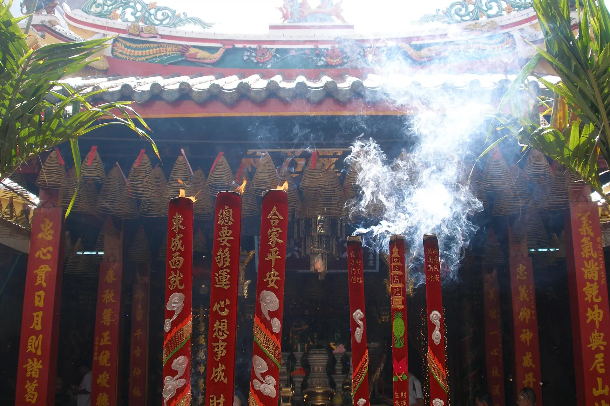

Lẩu mắm
Nồi lẩu mắm cá linh, cá sặc thơm nồng, ăn với rau đồng mùa nước nổi.
Ảnh minh họa: Mắm cá lóc – nguyên liệu nấu lẩu mắm Có ảnh thật của món này? Gửi cho Việt Travel
Châu Đốc nằm bên dòng Hậu giang, nổi tiếng với quần thể di tích Núi Sam – nơi có miếu Bà Chúa Xứ linh thiêng thu hút hàng triệu khách hành hương mỗi năm. Mùa nước nổi, rừng tràm Trà Sư phủ kín bèo xanh, làng bè cá và chợ nổi Long Xuyên nhộn nhịp.
Đang tải thời tiết...
Bấm vào một tháng để xem có nên đi không
23–27 tháng 4 âm lịch – một trong những lễ hội lớn nhất Nam Bộ.
Rất đông, nên ở Châu Đốc và đi sớm; giữ tư trang cẩn thận.
Sầu riêng, chôm chôm, măng cụt, xoài chín rộ – nhiều vườn ở Phong Điền, Cái Răng mở cửa cho khách ăn tại vườn.
Hỏi giá vé vào vườn (thường đã gồm ăn tại chỗ), mua mang về tính riêng; mang thuốc chống muỗi.
Nước lên đồng: cá linh, bông điên điển, rừng tràm Trà Sư xanh mướt.
Thử lẩu mắm cá linh – chỉ có vào mùa này.
Dịp lễ Sen Dolta của người Khmer: từng đôi bò kéo bừa lao trên ruộng sình ở Tri Tôn, Tịnh Biên – cuộc đua náo nhiệt, độc đáo.
Đứng sau hàng rào an toàn, bùn bắn nhiều – mặc đồ cũ, bọc máy ảnh.
Lễ theo âm lịch đổi ngày dương mỗi năm – kiểm tra lịch chính thức trước khi đi.
Nồi lẩu mắm cá linh, cá sặc thơm nồng, ăn với rau đồng mùa nước nổi.
Ảnh minh họa: Mắm cá lóc – nguyên liệu nấu lẩu mắm Có ảnh thật của món này? Gửi cho Việt TravelNước lèo vàng nghệ, cá lóc đồng, ăn kèm bông điên điển.
Ảnh minh họa: Bún nước lèo miền Tây Có ảnh thật của món này? Gửi cho Việt TravelBánh bò vàng ươm, ngọt thanh vị đường thốt nốt Bảy Núi.
Ảnh minh họa: Bánh bò Có ảnh thật của món này? Gửi cho Việt TravelBún cá lóc nghệ, bông điên điển
Chợ Châu Đốc Cập nhật 09/2026 Báo saiLẩu mắm với mắm cá linh, cá sặc
Đường Trưng Nữ Vương, Châu Đốc Cập nhật 09/2026 Báo saiMắm thái, mắm cá linh mang về
Chợ Châu Đốc Cập nhật 09/2026 Báo saiBò nướng lá lốt, bò bảy món
Chân Núi Sam Cập nhật 09/2026 Báo saiBánh canh bột xắt buổi sáng
Chợ Châu Đốc Cập nhật 09/2026 Báo saiGà đốt lá chúc (lá chanh Thái)
Ô Thum, Tri Tôn Cập nhật 09/2026 Báo saiCá linh, cá basa trên làng bè
Làng bè Châu Đốc Cập nhật 09/2026 Báo saiĂn vặt, bánh xèo, chè
Trung tâm Châu Đốc Cập nhật 09/2026 Báo saiGiá tham khảo mỗi người. Bấm địa chỉ để mở Google Maps xem giờ mở cửa và đánh giá mới nhất.
Lướt giữa thảm bèo xanh và đàn chim trời.
Lễ vía Bà vào tháng 4 âm lịch rất đông vui.
Lên "nóc nhà miền Tây" với tượng Phật Di Lặc.
Thăm làng bè và làng Chăm dệt thổ cẩm.
Tự gợi ý theo điểm đến và tháng đi (chọn ngày khởi hành ở phần Lịch trình để đổi tháng). Đánh dấu để ghi nhớ món đã chuẩn bị.
Thấy giá vé, giờ mở cửa hay quán đã thay đổi? Báo sai
350k–1tr / đêm
Gần chợ, bến thuyền làng bè.
400k–1,5tr / đêm
Gần miếu Bà Chúa Xứ, ngắm hoàng hôn.
300k–700k / đêm
Mùa nước nổi (tháng 9–11) rất đẹp.
Từ Sài Gòn xe khách ~6 giờ; từ Cần Thơ ~3 giờ. Có thể đi tàu cao tốc Châu Đốc – Phnom Penh.
| Từ Hà Nội |
|
|---|---|
| Từ Đà Nẵng |
|
| Từ TP. Hồ Chí Minh |
|
Thời gian ước tính lúc di chuyển, giá một chiều / người mức tiết kiệm – tham khảo. Phương án in đậm là gợi ý.
Giá phòng tham khảo cho 2 người/đêm, cao hơn vào lễ Tết và cuối tuần. Việt Travel không nhận hoa hồng từ các trang đặt chỗ.
Việt Travel · An Giang · Thời điểm đẹp: Tháng 9 – 11 (mùa nước nổi)
Đến Châu Đốc, viếng miếu Bà Chúa Xứ, lăng Thoại Ngọc Hầu.
Leo núi Sam ngắm cánh đồng biên giới, chùa Tây An.
Ăn lẩu mắm, dạo chợ Châu Đốc.
Dạo phố đêm một chút rồi về nơi ở nghỉ ngơi
Ăn sáng quán bình dân đông người địa phương gần nơi ở
Xuồng rừng tràm Trà Sư giữa thảm bèo và đàn chim.
Cáp treo núi Cấm, tượng Phật Di Lặc.
Dạo phố đêm một chút rồi về nơi ở nghỉ ngơi
Mang theo bánh mì, xôi nếu khởi hành sớm
Làng Chăm Châu Giang, thánh đường Hồi giáo Mubarak.
Ăn trưa nhẹ, mang theo nước và đồ ăn nếu đi xa
Làng bè cá Châu Đốc, xem nuôi cá tra.
Ăn bún cá Châu Đốc.
Dạo phố đêm một chút rồi về nơi ở nghỉ ngơi
Kết thúc tour: trả phòng, mua đặc sản và di chuyển về.
Ăn sáng tại nơi ở (thường đã gồm trong giá phòng)
Ăn trưa ngay tại khu tham quan buổi sáng – nhiều quán gần bến, cổng
Cánh đồng thốt nốt Tri Tôn, chùa Xà Tón.
Thưởng thức gà đốt lá chúc Ô Thum.
Dạo phố đêm một chút rồi về nơi ở nghỉ ngơi
Kết thúc tour: trả phòng, mua đặc sản và di chuyển về.
Ăn sáng quán bình dân đông người địa phương gần nơi ở
Chợ nổi Long Xuyên.
Cơm trưa bình dân gần điểm tham quan
Cù lao Ông Hổ, nhà lưu niệm Chủ tịch Tôn Đức Thắng.
Ăn tối gần nơi ở – chọn quán đông khách địa phương
Kết thúc tour: trả phòng, mua đặc sản và di chuyển về.
Chi tiết mức tiết kiệm
Chi tiết mức thoải mái
Chi tiết mức tiết kiệm
Chi tiết mức thoải mái
Chi tiết mức tiết kiệm
Chi tiết mức thoải mái
Chưa gồm vé máy bay/tàu xe tới Châu Đốc – Núi Sam. Giá tham khảo, thay đổi theo mùa.
Bảng giá vé & giờ mở cửa các điểm tham quan ở Châu Đốc – Núi Sam
Muốn đi nhiều nơi trong một chuyến? Ghép Châu Đốc – Núi Sam với các điểm đến khác.
Chia sẻ trải nghiệm của bạn
Ảnh từ người đọc
Chưa có ảnh nào – hãy là người đầu tiên chia sẻ khoảnh khắc ở Châu Đốc – Núi Sam!
Gửi ảnh của bạn